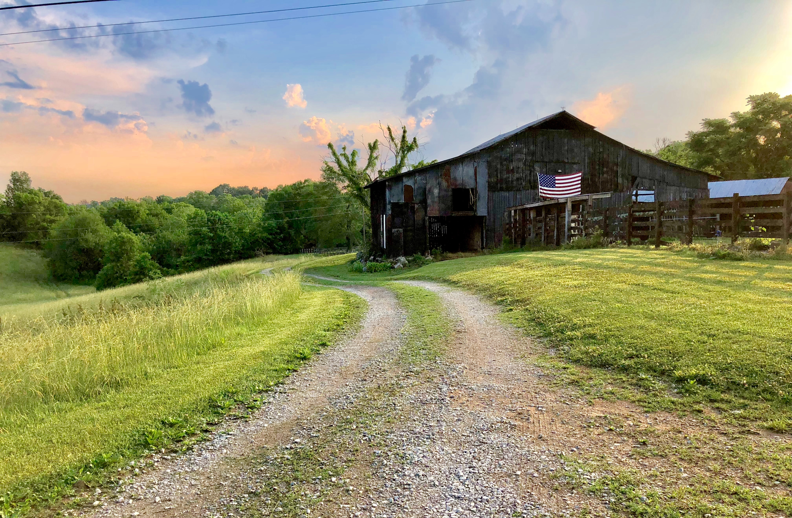
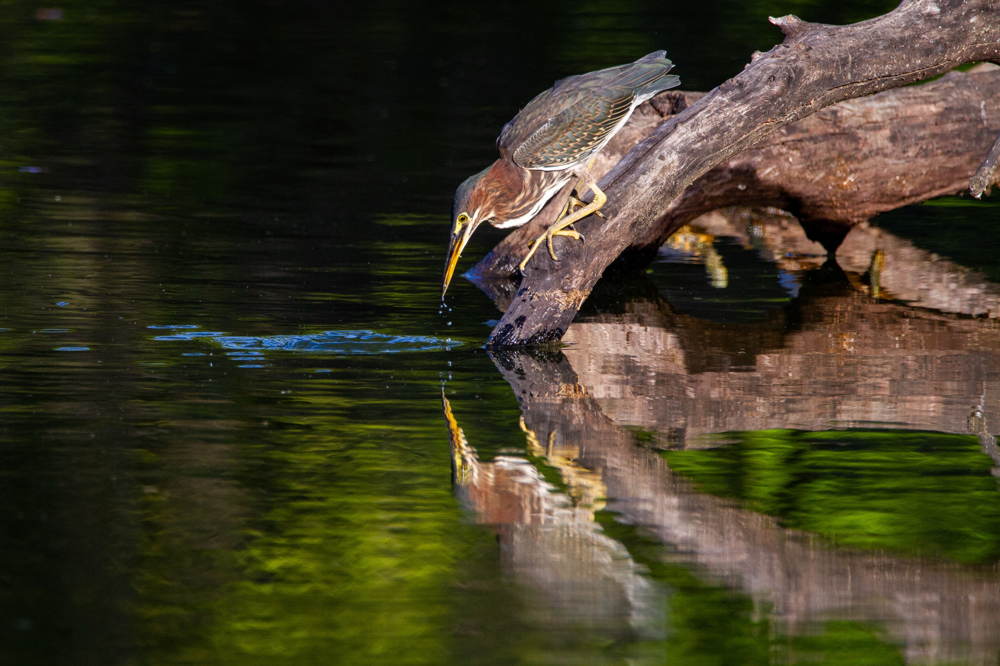
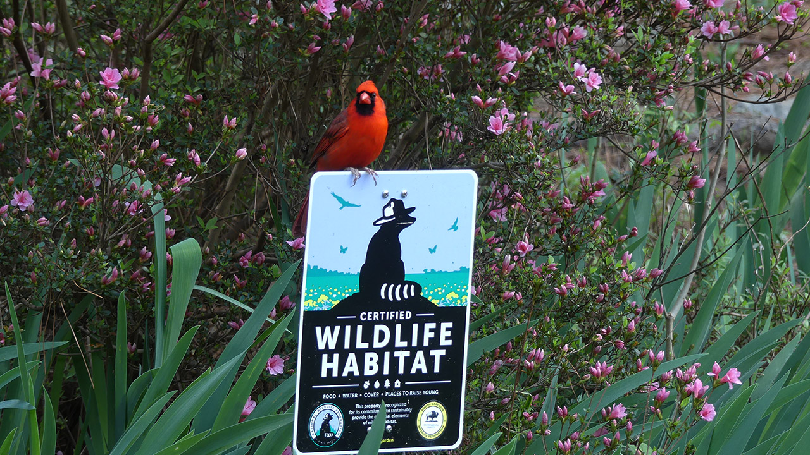

Welcome to the Hallowed Hill Farm
Hallowed Hill Farm - Beekeeping Workshops
Hallowed Hill Farm - Country Store
Traditional Workshops & Events
Check out our events, classes, and artisan workshops.
The Hallowed Hill Farm and The Wren's Nest now have private classes in traditional culinary techniques and presevation, blacksmithing, weaving, jewelry making, and even beekeeping! Sign up for events and check our calendar for upcoming ones.Explore More
Sustainable & Organic Farm Goods
Our shop at the Hallowed Hill Farm
is the sister shop of The Wren's Nest offers a unique variety of farm-raised goods and handcrafted items. All of our organic produce is grown with sustainability in mind and we adhear to strict regulations as a completely natural nature reserve.Shop Our Store
About Our Farming & Biodiversity
Hallowed Hill Farm - Beekeeping Workshops
Hallowed Hill Farm - Beekeeping Workshops


Organic Farming & Gardening
Check out our events, classes, and artisan workshops.
The Hallowed Hill Farm and The Wren's Nest now have private classes in traditional culinary techniques and presevation, blacksmithing, weaving, jewelry making, and even beekeeping! Sign up for events and check our calendar for upcoming ones.Explore More
Local Wildlife & Biodiversity
Our shop at the Hallowed Hill Farm
offers a unique variety of farm-raised goods and handcrafted items. All of our organic produce is grown with sustainability in mind and we adhear to strict regulations as a completely natural nature reserve. Check out our products ranging from natural honey to fresh produce.About Our Certified Wildlife Habitat
Hallowed Hill Farm - Beekeeping Workshops
Hallowed Hill Farm - Country Store


West Tennessee Certified Reserve
Check out our events, classes, and artisan workshops.
The Hallowed Hill Farm and The Wren's Nest now have private classes in traditional culinary techniques and presevation, blacksmithing, weaving, jewelry making, and even beekeeping! Sign up for events and check our calendar for upcoming ones.Explore More
Untouched Habitat
Our shop at the Hallowed Hill Farm
offers a unique variety of farm-raised goods and handcrafted items. All of our organic produce is grown with sustainability in mind and we adhear to strict regulations as a completely natural nature reserve. Check out our products ranging from natural honey to fresh produce.